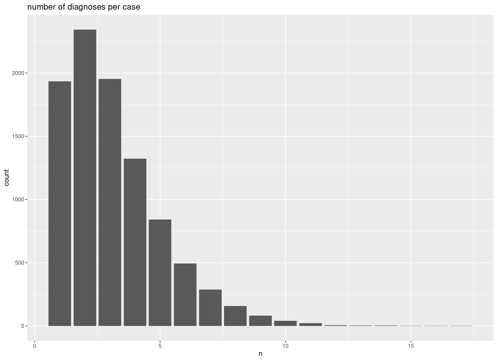
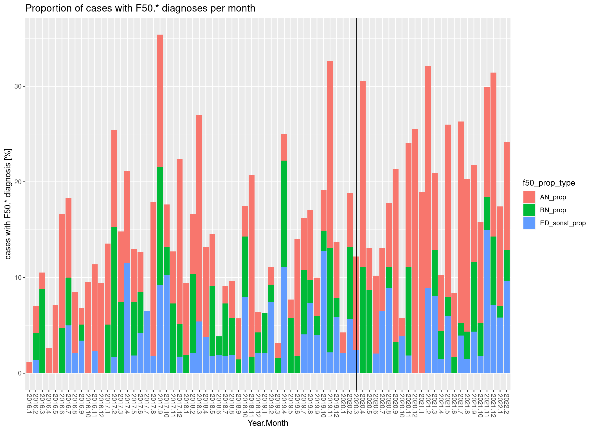
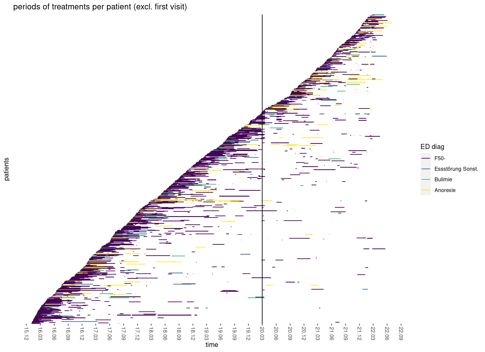

Last updated: 2023-03-07
Checks: 7 0
Knit directory: CoverCHILD/
This reproducible R Markdown analysis was created with workflowr (version 1.7.0). The Checks tab describes the reproducibility checks that were applied when the results were created. The Past versions tab lists the development history.
Great! Since the R Markdown file has been committed to the Git repository, you know the exact version of the code that produced these results.
Great job! The global environment was empty. Objects defined in the global environment can affect the analysis in your R Markdown file in unknown ways. For reproduciblity it’s best to always run the code in an empty environment.
The command set.seed(20221104) was run prior to running
the code in the R Markdown file. Setting a seed ensures that any results
that rely on randomness, e.g. subsampling or permutations, are
reproducible.
Great job! Recording the operating system, R version, and package versions is critical for reproducibility.
Nice! There were no cached chunks for this analysis, so you can be confident that you successfully produced the results during this run.
Great job! Using relative paths to the files within your workflowr project makes it easier to run your code on other machines.
Great! You are using Git for version control. Tracking code development and connecting the code version to the results is critical for reproducibility.
The results in this page were generated with repository version 4118487. See the Past versions tab to see a history of the changes made to the R Markdown and HTML files.
Note that you need to be careful to ensure that all relevant files for
the analysis have been committed to Git prior to generating the results
(you can use wflow_publish or
wflow_git_commit). workflowr only checks the R Markdown
file, but you know if there are other scripts or data files that it
depends on. Below is the status of the Git repository when the results
were generated:
Ignored files:
Ignored: .RData
Ignored: .Rhistory
Ignored: .Rproj.user/
Ignored: analysis/.Rhistory
Ignored: analysis/03_eating_disorder_stats.Rmd.bak
Ignored: analysis/_site.yml~
Ignored: code/data_etl.R.bak
Ignored: code/data_etl.R~
Ignored: code/eating_dis_cases.R.bak
Ignored: data/Ergebnis_V2_PLZ_PID_Fall_pseudonym.csv
Ignored: data/ICD_V2.csv
Ignored: data/ICPM_V3.csv
Ignored: data/KIJUPSY_Med_Detail_V2_pseudonym.csv
Ignored: data/Labordaten_V3.csv
Ignored: data/P21_FAB_V1_pseudonym.csv
Ignored: data/P21_Fall_V1_pseudonym.csv
Ignored: data/P21_ICD_V1_pseudonym.csv
Ignored: data/P21_OPS_V1_pseudonym.csv
Ignored: data/Pers_Fall_V2_pseudonym.csv
Ignored: data/Rezepte_Pack_Wirkstoff_V4_pseudonym.csv
Ignored: data/ext/
Ignored: notes_2022-11-30.odt
Ignored: notes_221128
Ignored: notes_221128~
Ignored: notes_etl.txt
Ignored: output/CoverCHILD_ED_stats_230217.zip
Ignored: output/CoverCHILD_data_230213.rds
Ignored: output/F50_prop_per_month.png
Ignored: output/Rplot.png
Ignored: output/Rplot01.png
Ignored: output/data_utf8/
Ignored: output/nicht-f-diagnosen.csv
Ignored: variables_unify_per_case.txt~
Untracked files:
Untracked: analysis/02_granger_time_series.Rmd
Untracked: code/join_close_cases.R
Untracked: variable_names.txt
Untracked: variable_names_clarify.txt
Untracked: variables_unify_per_case.txt
Note that any generated files, e.g. HTML, png, CSS, etc., are not included in this status report because it is ok for generated content to have uncommitted changes.
These are the previous versions of the repository in which changes were
made to the R Markdown
(analysis/03_eating_disorder_stats.Rmd) and HTML
(docs/03_eating_disorder_stats.html) files. If you’ve
configured a remote Git repository (see ?wflow_git_remote),
click on the hyperlinks in the table below to view the files as they
were in that past version.
| File | Version | Author | Date | Message |
|---|---|---|---|---|
| Rmd | 4118487 | Simeon Platte | 2023-03-07 | Adapt Eating disorder data processing & visualisation to updated data in normal form. |
| html | 8a9da8f | Simeon Platte | 2023-02-17 | Build site. |
| Rmd | 18cac1a | Simeon Platte | 2023-02-17 | Add ED subcategories to eating disorder stats. |
| html | 009ba47 | Simeon Platte | 2023-02-16 | Build site. |
| Rmd | 4aac73e | Simeon Platte | 2023-02-16 | Update observation periods for eating disorder stats html. |
| html | a650b43 | Simeon Platte | 2023-02-14 | Build site. |
| Rmd | b3b1ddb | Simeon Platte | 2023-02-14 | Publish eating disorder stats html. |
| Rmd | 6094d12 | Simeon Platte | 2023-02-14 | Add eating disorder data processing script & first stats Rmd. |

`summarise()` has grouped output by 'icd_f50'. You can override using the
`.groups` argument.

$pre_covid
icd_f50/sex M W Total
F50- 43.3% (1,013) 56.7% (1,325) 100.0% (2,338)
F50+ 14.7% (53) 85.3% (308) 100.0% (361)
Total 39.5% (1,066) 60.5% (1,633) 100.0% (2,699)
$dur_covid
icd_f50/sex M W Total
F50- 37.4% (412) 62.6% (690) 100.0% (1,102)
F50+ 11.3% (32) 88.7% (250) 100.0% (282)
Total 32.1% (444) 67.9% (940) 100.0% (1,384)$pre_covid
f50_type/sex M W Total
F50- 43.3% (1,013) 56.7% (1,325) 100.0% (2,338)
Essstörung Sonst. 20.5% (17) 79.5% (66) 100.0% (83)
Bulimie 13.7% (14) 86.3% (88) 100.0% (102)
Anorexie 12.5% (22) 87.5% (154) 100.0% (176)
Total 39.5% (1,066) 60.5% (1,633) 100.0% (2,699)
$dur_covid
f50_type/sex M W Total
F50- 37.4% (412) 62.6% (690) 100.0% (1,102)
Essstörung Sonst. 23.8% (15) 76.2% (48) 100.0% (63)
Bulimie 0.0% (0) 100.0% (42) 100.0% (42)
Anorexie 9.6% (17) 90.4% (160) 100.0% (177)
Total 32.1% (444) 67.9% (940) 100.0% (1,384)
R version 4.2.2 Patched (2022-11-10 r83330)
Platform: x86_64-pc-linux-gnu (64-bit)
Running under: Ubuntu 22.04.2 LTS
Matrix products: default
BLAS: /usr/lib/x86_64-linux-gnu/blas/libblas.so.3.10.0
LAPACK: /usr/lib/x86_64-linux-gnu/lapack/liblapack.so.3.10.0
locale:
[1] LC_CTYPE=en_US.UTF-8 LC_NUMERIC=C
[3] LC_TIME=de_DE.UTF-8 LC_COLLATE=en_US.UTF-8
[5] LC_MONETARY=de_DE.UTF-8 LC_MESSAGES=en_US.UTF-8
[7] LC_PAPER=de_DE.UTF-8 LC_NAME=C
[9] LC_ADDRESS=C LC_TELEPHONE=C
[11] LC_MEASUREMENT=de_DE.UTF-8 LC_IDENTIFICATION=C
attached base packages:
[1] tools stats graphics grDevices utils datasets methods
[8] base
other attached packages:
[1] knitr_1.42 janitor_2.2.0 glue_1.6.2
[4] rlang_1.0.6 psych_2.2.9 ggVennDiagram_1.2.2
[7] magrittr_2.0.3 lubridate_1.9.2 forcats_1.0.0
[10] stringr_1.5.0 dplyr_1.1.0 purrr_1.0.1
[13] readr_2.1.4 tidyr_1.3.0 tibble_3.1.8
[16] ggplot2_3.4.1 tidyverse_2.0.0 workflowr_1.7.0
loaded via a namespace (and not attached):
[1] Rcpp_1.0.10 lattice_0.20-45 getPass_0.2-2 ps_1.7.2
[5] rprojroot_2.0.3 digest_0.6.30 utf8_1.2.3 R6_2.5.1
[9] evaluate_0.20 highr_0.9 httr_1.4.5 pillar_1.8.1
[13] rstudioapi_0.14 whisker_0.4 callr_3.7.3 jquerylib_0.1.4
[17] rmarkdown_2.20 labeling_0.4.2 bit_4.0.4 munsell_0.5.0
[21] compiler_4.2.2 httpuv_1.6.9 xfun_0.37 pkgconfig_2.0.3
[25] mnormt_2.1.1 htmltools_0.5.4 tidyselect_1.2.0 viridisLite_0.4.1
[29] fansi_1.0.4 crayon_1.5.2 tzdb_0.3.0 withr_2.5.0
[33] later_1.3.0 grid_4.2.2 nlme_3.1-162 jsonlite_1.8.3
[37] gtable_0.3.1 lifecycle_1.0.3 git2r_0.30.1 scales_1.2.1
[41] cli_3.6.0 stringi_1.7.12 vroom_1.6.1 cachem_1.0.7
[45] farver_2.1.1 RVenn_1.1.0 fs_1.6.1 promises_1.2.0.1
[49] snakecase_0.11.0 bslib_0.4.1 ellipsis_0.3.2 generics_0.1.3
[53] vctrs_0.5.2 bit64_4.0.5 hms_1.1.2 processx_3.8.0
[57] parallel_4.2.2 fastmap_1.1.1 yaml_2.3.7 timechange_0.2.0
[61] colorspace_2.1-0 sass_0.4.5